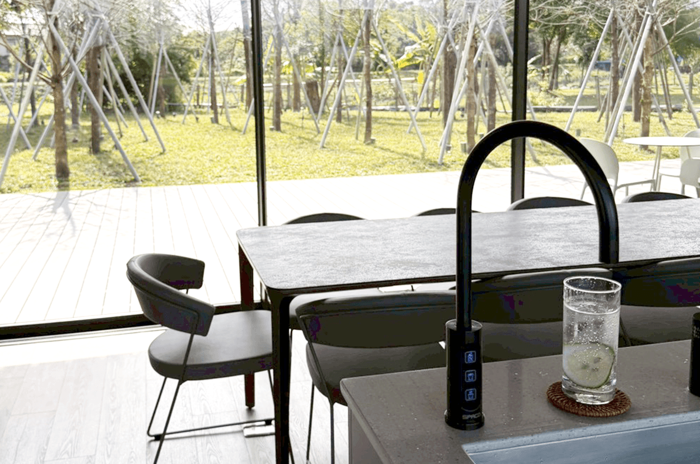
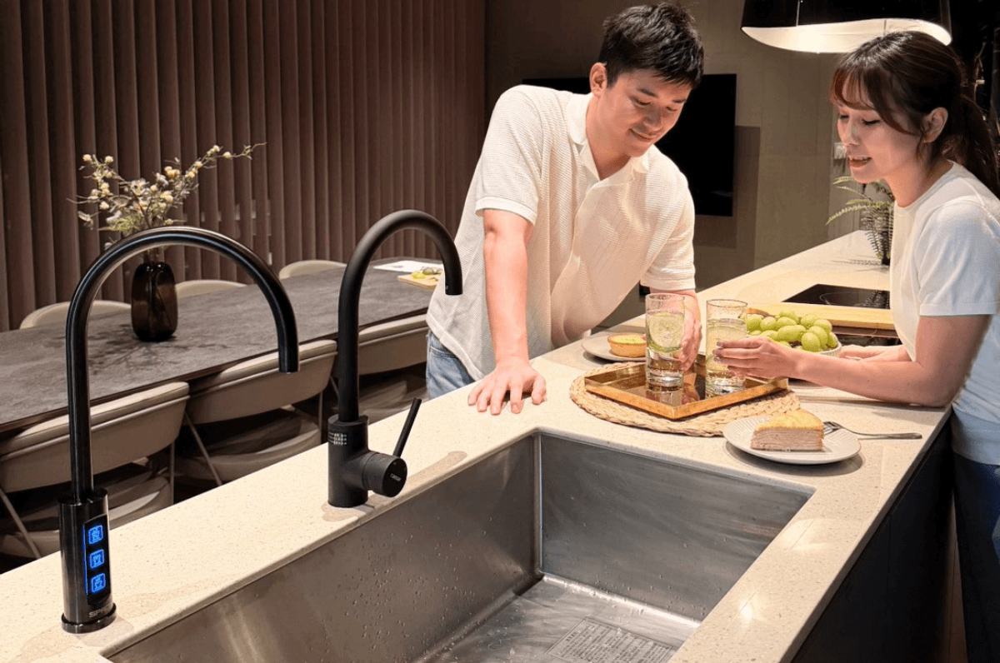
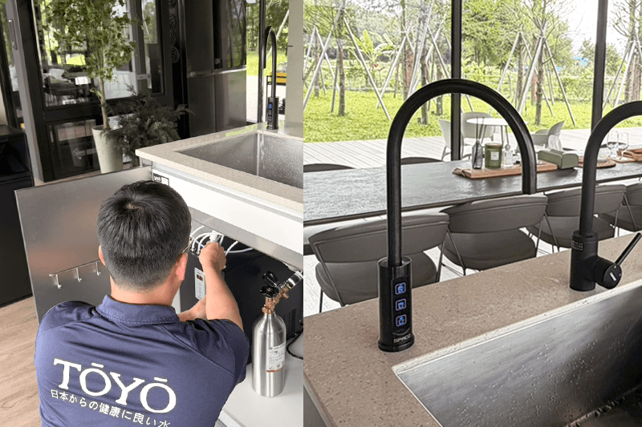

德築集團旗下生活別墅 HA House 冬，於 2026 年正式開幕，以包棟式生活旅宿概念，重新定義當代度假空間的居住想像。建築以「活著的建築」為核心理念，透過自然光影、材質層次與流動式空間設計，讓人與環境產生更深層的感知連結，在靜謐節奏中感受生活本質。
作為現代居家淨飲設備品牌，TOYO淨水 深信，真正理想的生活空間，不只存在於建築語彙之中，更延伸至每一次日常使用體驗。因此，HA House 冬此次特別導入 TOYO SPACO觸控櫥下型氣泡水冰溫熱飲水機X-3 Pro，將高機能淨飲科技融入整體空間規劃之中，打造兼具美感、效率與舒適性的生活場域。

TOYO SPACO X-3 Pro 以極簡俐落的設計語彙，呼應 HA House 冬純粹且富有節奏感的建築風格。產品整合冰氣泡水、常溫水、熱水功能，搭配熱水無段式溫控與智慧定溫系統，滿足現代生活中多元且細緻的飲水需求。同時具備能源效率二級節能設計，在提升便利性的同時，也兼顧永續與日常使用效能。
TOYO淨水 一直致力於將科技融入生活細節，讓設備不只是功能性的存在，更成為空間美學的一部分。SPACO X-3 Pro 在操作體驗上採用直覺式觸控介面，透過簡化使用流程，讓科技回歸人性需求，呈現當代居家設備以「體驗導向」為核心的設計思維。

此次 HA House 冬與 TOYO淨水 的合作，不只是建築與設備的結合，更是一種生活理念的共鳴。當自然光影、空間尺度與飲水體驗彼此交融，TOYO SPACO X-3 Pro 成為串聯生活節奏的重要媒介，讓居住者在每一次使用之中，都能感受到空間所傳遞的舒適、純淨與質感。
在 TOYO淨水 看來，真正理想的生活，不只是看得見的設計，更是每一個被細膩照顧的日常瞬間。